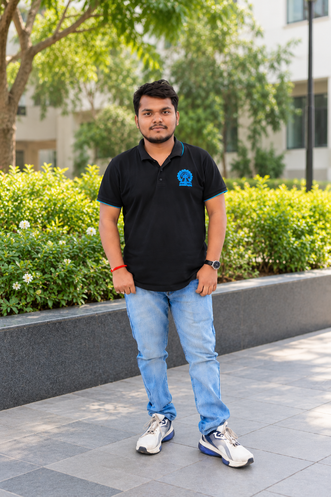

01 / METHODS
Bayesian & Trust-Region Optimization
Developing sample-efficient methods such as multiple trust-region Bayesian optimization for costly, black-box objective functions.
Ph.D. Scholar in Department of Mathematics
Indian Institute of Technology Kharagpur
I develop optimization methods for expensive black-box problems by combining Bayesian optimization, Gaussian processes, and principled uncertainty modelling.

I am a Ph.D. Scholar in the Department of Mathematics at the Indian Institute of Technology Kharagpur. My research focuses on efficient surrogate-assisted optimization algorithms for expensive black-box problems and decision-making under uncertainty.
My work spans trust-region Bayesian optimization, Bayesian fuzzy optimization using Gaussian fuzzy processes, AI-assisted portfolio optimization incorporating financial-news sentiment, and dynamic scheduling for Earth observation satellites. I am also investigating algebraic-geometric approaches to synthetic data generation for scarce and imbalanced datasets.
More broadly, I am interested in bringing rigorous mathematical optimization together with machine learning and modern AI to build scalable, interpretable, and uncertainty-aware systems.
A selection of connected research themes, from methodological development to applied decision-making.
Developing sample-efficient methods such as multiple trust-region Bayesian optimization for costly, black-box objective functions.
Combining Gaussian-process modelling with fuzzy representations to support optimization when data and outcomes are uncertain.
Using Bayesian optimization for portfolio allocation, including dynamic settings, risk-aware objectives, and financial-news sentiment.
Studying scheduling policies that balance predefined observations with capacity reserved for uncertain future emergency requests.
Exploring trust-region strategies and acquisition methods for expensive problems with multiple competing objectives.
Investigating algebraic-geometric ideas for understanding and generating data in scarce or imbalanced learning settings.
Published journal articles and ongoing manuscripts, based on my current CV. Follow the DOI links for the published papers.
Sourav Das, Debjani Chakraborty, and Pabitra Mitra.
Evolving Systems
Read publication ↗Sourav Das, Debdas Ghosh, Debjani Chakraborty, and Pabitra Mitra.
IEEE Access
Read publication ↗Sourav Das, Debjani Chakraborty, and Pabitra Mitra.
In Artificial Intelligence Modeling for Dynamical Problems, Elsevier
Accepted for publicationSourav Das, Debjani Chakraborty, and Pabitra Mitra.
Journal manuscript
CommunicatedSourav Das, Pragya Gupta, Abhijit Chatterjee, Aishwaryaprajna, and Debjani Chakraborty.
Research in progress
Sourav Das, Debjani Chakraborty, and Pabitra Mitra.
Research in progress
For the most up-to-date publication record, please also visit Google Scholar.
Indian Institute of Technology Kharagpur · CGPA: 9.07/10
Research: Bayesian optimization, portfolio optimization, trust-region methods, multi-objective optimization, Gaussian processes, and machine learning.
Indian Institute of Technology Kharagpur · CGPA: 8.07/10
University of Calcutta · 68.9%
Ramakrishna Mission Residential College, Narendrapur · 56.5%
Teaching assistant for Mathematics I and II, Nonlinear Programming (MATLAB), Database Management Systems (SQL), Programming in C, and Data Structures and Algorithms (Python/C++). Also contributed to NPTEL courses on Constrained and Unconstrained Optimization (2024) and Mathematics for Machine Learning (2025).
Bayesian optimization, multi-objective optimization, trust-region methods, Gaussian processes, probabilistic modelling, fuzzy optimization.
Machine learning, deep learning, natural language processing, explainable AI, computer vision, synthetic data generation.
Python, MATLAB, C, C++.
NumPy, Pandas, SciPy, scikit-learn, SymPy, PyTorch, pymoo.
Portfolio allocation, satellite scheduling, uncertainty-aware decision-making, scarce and imbalanced datasets.
Teaching assistance, research communication, analytical problem solving, mentoring.
I'm happy to connect about Bayesian optimization, probabilistic modelling, mathematical optimization, and collaborative research.